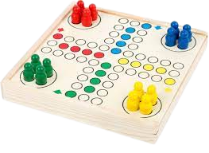
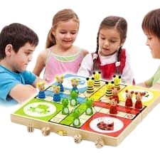
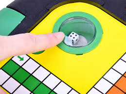

Zasady Gry
Na początek każdy z graczy wybiera cztery pionki w jednym kolorze (najczęściej: czerwony, żółty, niebieski lub zielony) i ustawia je w swoim „schowku”, czyli kwadracie w kolorze, który wybrał.Gracze, w ustalonej wcześniej kolejności, rzucają kostką.Wygrywa ten gracz, który jako pierwszy wprowadzi wszystkie swoje pionki do „domku”. Jeśli grają trzy lub cztery osoby, to pozostałych troje (lub dwoje) graczy może dalej toczyć grę – o 2. i 3. miejsce. Na obszarze języka angielskiego gra ta znana jest przede wszystkim jako ludo (gra ta w Wielkiej Brytanii opatentowana została w 1896 roku). Od 1918 roku na obszarze języka niemieckiego i w wielu innych krajach Europy (czasami także w Polsce) gra znana jest głównie jako „Nie irytuj się” lub „Człowieku, nie irytuj się”, co jest dosłownym tłumaczeniem oryginalnego niemieckiego tytułu „Mensch ärgere Dich nicht”. Czasami chińczyk określa też się nazwą pachisi. Stara hinduska gra planszowa pachisi jest znana i uprawiana w Indiach do dziś. Oparte na niej gry znane są szeroko w Azji, a także na terenie obydwu Ameryk (według historyków dotarły tam z Korei poprzez Syberię i Alaskę). Po podboju arabskim w VII wieku gra dotarła do Hiszpanii – znalazła się w Europie. Josef Friedrich Schmidt, upraszczając znacznie tę grę (na przełomie 1907 i 1908 roku), stworzył chińczyka znanego nam we współczesnej postaci. Pomysłodawca założył w 1910 roku, istniejącą do dziś znaną z gier i puzzli, firmę wydawniczą Schmidt Spiele. Wtedy też gra została przedstawiona szerokiej publiczności. Począwszy od pierwszego wydania w 1914 roku, na całym świecie sprzedano ponad 70 milionów egzemplarzy, a jej zasady pozostają niezmienione. Co roku w Niemczech odbywają się mistrzostwa kraju, a 28 sierpnia 2010 roku odbyły się tam pierwsze mistrzostwa świata
- Gracze, w ustalonej wcześniej kolejności, rzucają kostką po trzy razy, aż do momentu, kiedy któryś z graczy wyrzuci kostką liczbę 6 – wtedy ustawia jeden ze swoich czterech pionków na polu startowym (kropka w kolorze gracza) i rzuca jeszcze raz, by następnie przesunąć pionek o taką liczbę pól w kierunku zgodnym z ruchem wskazówek zegara, ile wyrzuci kostką.
- Gracze przesuwają się o taką liczbę pól, jaką wyrzucą kostką.
- Jeżeli któryś z graczy wyrzuci 6, ma prawo do jeszcze jednego rzutu (pozostali czekają kolejkę). Kiedy przykładowo ktoś wyrzuci 6, a potem 5, rusza się o 11 pól (6 + 5 = 11). Kiedy wyrzuci 6, a potem jeszcze raz 6, rzuca jeszcze raz itd. Gracz, po wyrzuceniu 6, może także wyprowadzić ze „schowka” kolejny pionek.
- Pionki mogą nad sobą przeskakiwać.
- Jeśli podczas gry pionek jednego gracza stanie na polu zajmowanym przez drugiego, pomijając pole startowe, pionek stojący tutaj poprzednio zostaje zbity i wraca do swojego „schowka”.
- Kiedy gracz obejdzie pionkiem całą planszę dookoła, wprowadza swój pionek do „domku” – czyli czterech pól oznaczonych własnym kolorem. Do „domku” jednego gracza nie mogą wjechać swoimi pionkami inni gracze.
- Kiedy gracz wjechał swoim pionkiem do „domku”, a na planszy nie ma żadnych innych jego pionków, musi wylosować 6, aby móc wprowadzić kolejny pionek ze „schowka” na planszę. W takiej sytuacji zamiast jednego rzutu kostką – ma trzy próby.
- To samo gracz wykonuje, kiedy jego wszystkie pionki zostały zbite i nie ma żadnej możliwości ruchu.
GALERIA



Instrukcja